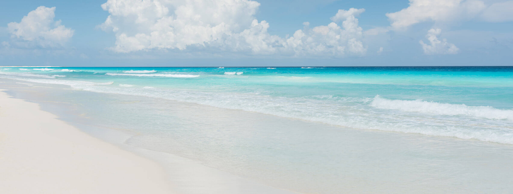

Price per person: $48
Tour duration: 5 hours
Explore the fantastic nature and picturesque Mayan archaeological site which rests on a 12-metre cliff above the clear turquoise Caribbean sea. You will be guided by a local expert who will share secrets, myths and legends from the ancient Mayans.

Price per person: $62
Tour duration: 7 hours
Regarded as one of the world’s most important and iconic archaeological Mayan complex, Chichen Itza is a must-see for any visitor to the Yucatan Peninsula. You will enjoy a guided tour of the historic site during which you will have the chance to learn about the history of the Mayan civilisation.
Price per person: $46
Tour duration: 6 hours
Discover the Mayan city of Coba, which provides a glimpse into Mayan culture. Climb to the top of the pyramid and experience breathtaking views of the jungle, usually reserved for kings and priests. This site is one of the oldest Mayan cities and home to the highest pyramid in the Yucatan region.
Price per person: $195
Tour duration: 2 x days
Discover the Mayan complex of Chichen Itza, home to one of the new seven wonders of the world. You will be guided through the complex and your local tour guide will share Mayan secrets and myths. The tour will continue in the afternoon to the Tulum temple ruins which are located on a cliff top overlooking the beautiful Caribbean Sea. Your local guide is a local expert and will guide you through the complex and share the special access privilege to the private beach beneath the temple ruins. On the morning of the second day you will continue your journey arriving at the pyramid ruins of Coba. There, another local guide, a descendant of the original Mayan inhabitants of this region, will tell you all about the wondrous history and legends of Coba and guide you through the complex ensuring that you experience everything this wonderful site has to offer.


Price per person: $172
Tour duration: 2 x days
Explore the beautiful ruins of Tulum nestled between the Caribbean Sea and the Jungle. You will be guided around this Mayan site by a local tour guide and given access to the private beach below to soak up some golden rays or cool off in the sea and look up at El Castillo (The Castle) on the cliff edge. From Tulum, we will travel down the coast to the sleepy little town of Bacalar where you are free to swim/sunbathe or sail along the lagoon in canoes. There is no better way to spend an afternoon! The next morning the tour will continue onwards to Calakmul which is located deep in the jungle on the Guatemalan border. Also known historically as The Snake Kingdom, Calakmul houses 6750 ancient structures and is home to the tallest pyramid in the Campeche region. Climb to the top and you are rewarded with a spectacular view of the lush jungle which stretches as far as the eye can see.
Price per person: $198
Tour duration: 2 x days
Discover the beautiful Las Coloradas famous for its bright pink lakes on the Gulf of Mexico edge and home to thousands of migrating Flamingos who get their colour from eating the Pink Shrimps in these lakes! You are free to roam or bathe in the salt lakes. We continue then to the archeological Mayan complex of Chichen Itza in the late afternoon where you will be guided around this historic site and then experience the light show after dark which will bring history alive as the main temple is illuminated as you listen to the story of the Mayan people. The next morning we will continue to the ancient Mayan city of Uxmal, one of the most well preserved Mayan cities in the region. You will be guided through this extensive complex by your local guide who will show you the secret trails and must-see areas.
Price per person: $254
Tour duration: 3 x days
Discover the beautiful Las Coloradas - bright Pink lakes on the Gulf of Mexico edge and home to thousands of migrating Flamingos who get their color from eating the Pink Shrimps in these lakes! You are free to roam or bathe in the salt lakes. We continue in the afternoon to Cenote Suytun where you will descend underground to a shallow subterranean swimming hole filled with stalactites and stalagmites where you are free to experience the most exhilarating swim. The next morning we will proceed to the ancient Mayan city of Uxmal, one of the most well preserved Mayan cities in the region. You will be guided through this extensive complex by your local guide who will show you all the secret trails and must-see areas of the complex. In the late afternoon it’s onwards to the Mayan complex of Chichen Itza where you will be guided through the complex learning about the ancient Maya. After the sun sets, you will be treated to a light show projected over the pyramid where you will be able to see the story of the Mayans who once lived there. The next morning you will continue to to the vibrant, colonial, city of Merida where you are free to roam around the city, do some shopping and enjoy the beautiful architecture.
Price per person: $278
Tour duration: 3 x days
Explore the beautiful ruins of Tulum nestled between the Caribbean Sea and the Jungle. You will be guided around this Mayan site by a local tour guide and given access to the private beach below the ruins to soak up some rays or cool off in the sea and look up at El Castillo (The Castle) on the cliff edge. From Tulum, we will travel to the village of Mahahual, famous for seafood and unspoilt white sand beaches. You’re free to roam, eat, swim and catch some golden rays of sun.The next morning, we will travel down the coast to the sleepy little town of Bacalar which is located on Lake Bacalar, also known as the Lagoon of Seven Colours due to its blue & turquoise hues). You’re free to swim, snorkel or canoe and enjoy the beautiful flora and fauna. The next morning the tour will continue onwards to Calakmul which is located deep in the jungle on the Guatemalan border. Historically known as The Snake Kingdom, Calakmul houses 6750 ancient structures and is home to the tallest pyramid in the Campeche region. Climb to the top and experience the lush jungle for as far as your eyes can see. In the afternoon, you will continue to the walled city of Campeche on the Gulf of Mexico edge which was declared a UNESCO World heritage site in 1997. You are free to roam throughout the city, stroll along the famous malecon (boardwalk), taste the famous seafood and gaze at the colossal fortress of Fuerte San Miguel.
Price per person: $198
Tour duration: 2 x days
Your adventure starts with Calakmul which is located deep in the jungle on the Guatemalan border. Calakmul is also known as the Snake kingdom; this complex houses 6750 ancient structures and is home to the tallest pyramid in the Campeche region. Climb to the top and experience the lush jungle which stretches as far as the eye can see. Later in the afternoon continue to the walled city of Campeche on the Gulf of Mexico edge, declared a UNESCO World heritage site in 1997. You are free to roam throughout the city, stroll along the famous malecon (boardwalk), taste the famous seafood and gaze at the colossal fortress of Fuerte San Miguel. The next morning, you will continue to the vibrant, colonial, city of Merida where you are free to roam around the city, do some shopping and enjoy the beautiful architecture. In the late afternoon, continue to the Mayan complex of Chichen Itza where you will be guided throughout the complex learning about the ancient Maya. After the sun sets, you will be treated to a light show projected over the pyramid where you will be able to see the story of the Mayans who once lived there. The next morning we will proceed to the ancient Mayan city of Uxmal, one of the most well preserved Mayan cities in the region. You will be guided through this extensive complex by your local guide who will show you all the secret trails and must-see areas of the complex.